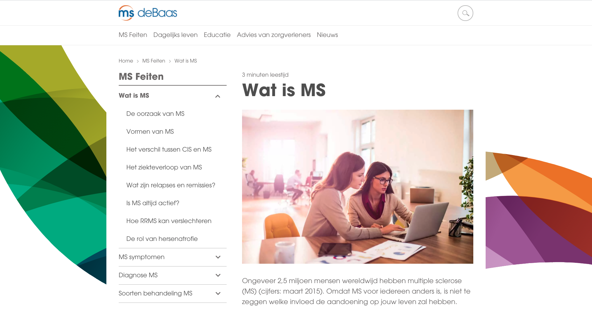
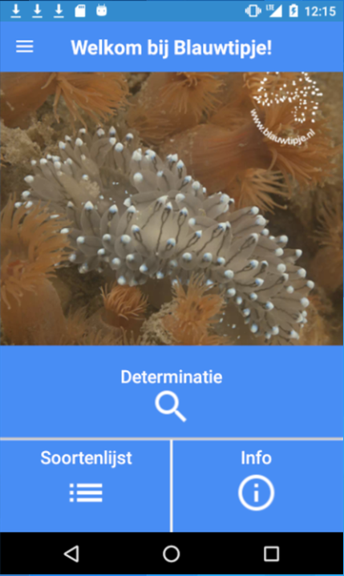

Portfolio






Allereerst bedankt voor je interesse in mijn werk!
Mijn naam is Gerbrecht Ghijsels en na vijf jaar HBO-ICT software engineering te hebben
gestudeerd en mijn studie te hebben afgerond en dus mijn diploma
heb ben ik klaar voor de eerste stap in mijn carrière als afgestudeerd software engineer.